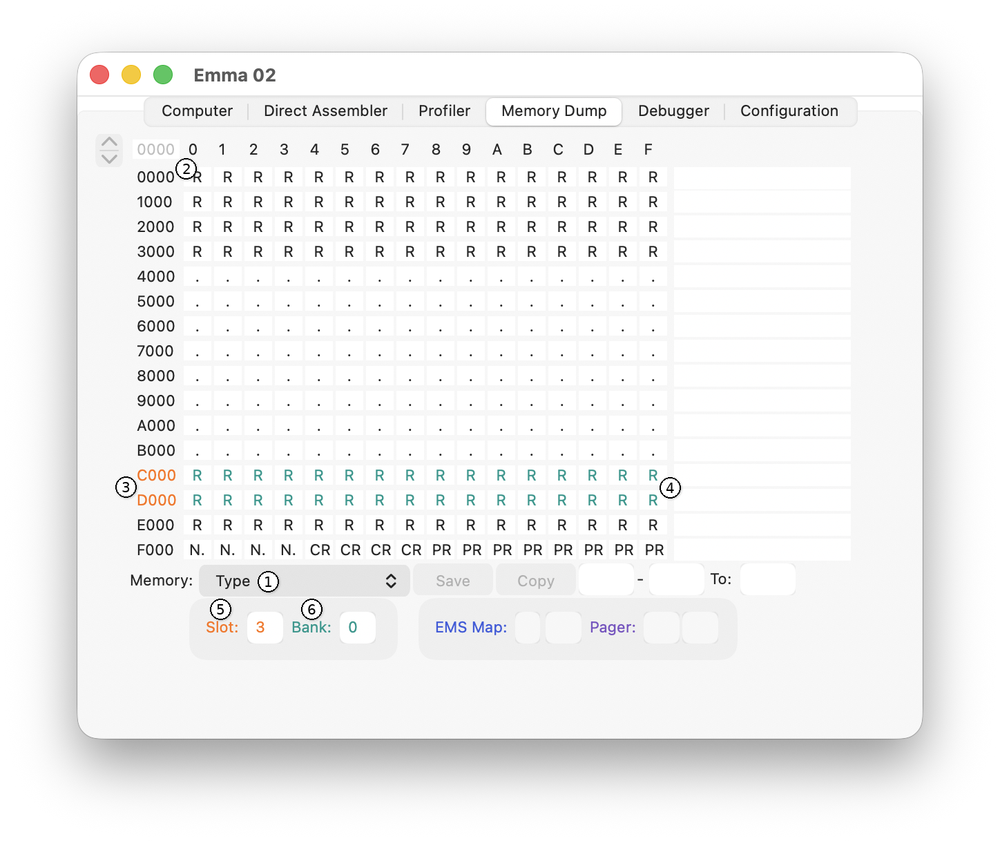

The memory type of the main 64K CPU memory is shown when the Memory selector (1) is set to Type. Each field defines one page, i.e., 256 bytes of memory, so the top-left field (2) defines addresses 0000 to 00FF. To change the memory type of a page, select the field and change its value.
Note: Changing any of these values might crash the emulated computer, so use with care.
The Memory Dump tab with the Memory selector set to Type is shown below:

If a memory type is shown in coloured text, the type or address range is linked to a hardware mapper, such as COMX slots (3) or banks (4) and Elf EMS or ROM pagers. The colour used matches the mapper selection fields (5) and (6).
Definition of available memory types per computer type:
| Memory type | Definition | Available (if configured) |
| <space> | Undefined | All computers |
| . | RAM | All computers |
| C2 | Colour RAM CDP1862 | Conic M-1200 COSMAC VIP COSMAC VIP II RCA Studio III (NTSC) VIP2K Membership Card |
| C4 | Colour RAM CDP1864 | Academy Apollo 80 Hanimex MPT-02 Mustang 9016 RCA Studio III (PAL) Sheen M-1200 Soundic Victory MPT-02 Telmac 2000 Trevi M-1200 Visicom COM-100 |
| CE | COMX Expansion ROM copy | COMX-35 COMIX-35 |
| CF | Floppy disk ROM copy | COMX-35 COMIX-35 |
| CR | 1870 Character RAM / ROM | COMX-35 COMIX-35 Cidelsa Arcade Game Console PECOM 32 PECOM 64 RCA COSMAC Computer Development System RCA COSMAC Microboard Computer Telmac TMC-600 VIS1802 |
| CS | Colour RAM RCA Studio IV | RCA Studio IV |
| M. | Mapped RAM | Academy Apollo 80 Conic M-1200 COSMAC Elf COSMAC VIP Hanimex MPT-02 Mustang 9016 Netronics Elf II Quest Super Elf RCA COSMAC Computer Development System RCA COSMAC Computer Game System RCA COSMAC Microboard Computer RCA Studio II RCA Studio III RCA Video Coin Arcade Game Console Sheen M-1200 Soundic Victory MPT-02 Trevi M-1200 VIP2K Membership Card Visicom COM-100 |
| M5 | MC6845 Video RAM | COMX-35 COMIX-35 COSMAC Elf Netronics Elf II Pico/Elf V2 Quest Super Elf RCA COSMAC Microboard Computer |
| M7 | MC6847 Video RAM | COSMAC Elf Macbug Netronics Elf II Pico/Elf V2 Quest Super Elf |
| MR | MC6845 Register | COMX-35 COMIX-35 COSMAC Elf Netronics Elf II Pico/Elf V2 Quest Super Elf RCA COSMAC Microboard Computer |
| PR | 1870 Page RAM / ROM | COMX-35 COMIX-35 Cidelsa Arcade Game Console PECOM 32 PECOM 64 RCA COSMAC Computer Development System RCA COSMAC Microboard Computer Telmac TMC-600 VIS1802 |
| R | ROM | All computers |
| RS | Register Storage | CDP18S020 Evaluation Kit |
| VP | VP570 Expansion RAM | COSMAC VIP |